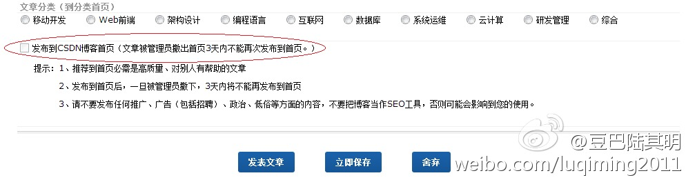
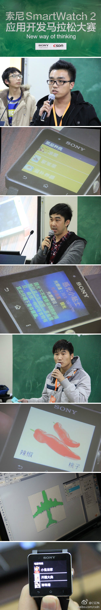
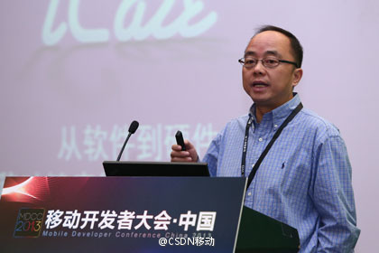
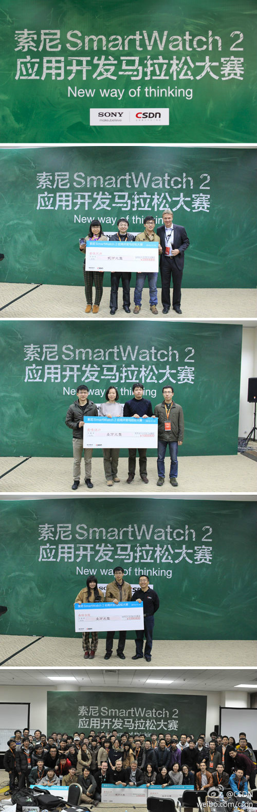

回复@刘江总编:需要制定机制，然后改进产品。 //@刘江总编:博客首页也应该采取极客头条的机制，有最新和最热，谁都可以推最新，最热大家决定 @Ada李力@豆巴陆其明:今天发现"发布到CSDN博客首页"这个选项又莫名其妙不能勾了，猜是昨天的一篇文章被“管理员”撤下了。是这篇吗？网页链接 敢问@CSDN 到底是什么原因呢？啥叫“高质量、对别人有帮助的文章”？都是“管理员”说了算的？@孟迎霞 @蒋涛CSDN @刘江总编 
回复@艾玛_Y:等俺闺女大些，给她买个玩儿。 //@艾玛_Y:很多孩子玩儿这个，有大赛。外甥还开了个培训学校。@Ada李力:#MDCC 2013#乐高可编程机器人也来凑热闹。4000多元的价位可不便宜。
昨晚虽然提供了睡袋，还是有选手一夜未眠，今天中午完成了所有代码时说这会儿才送了口气。本次CSDN举办的MDCC大会上，索尼与CSDN联合举办“New way of thinking——索尼SmartWatch 2应用开发马拉松大赛”。我们邀请了来自全国各地的近80位开发者组队参与此次大赛，全程直播 网页链接
大家的应用演示超出预计。32小时要开发出手机端应用和手表端应用，难度还是蛮大，但绝大多数的应用都跑出来了。@CSDN:#MDCC#索尼SmartWatch 2应用开发马拉松大赛作品展示环节中，各位参赛者正在展现自己两天努力的成果。我是大厨师、Baby Card、打飞机（观看视频MDCC 2013 Sony SmartWatch 2应用开发马拉松作品展示：打飞机）、电影梦工厂、感光小贴士等产品逐个曝光。更多参赛应用展示，请猛击大赛直播页：网页链接  69次播放 00:00
@陶建辉快乐妈咪 也是Sony Hackathon应用开发马拉松大赛的评委。@CSDN移动:#MDCC# #首届智能硬件峰会# 快乐妈咪创始人陶建辉分享了《移动健康行业里的软硬结合》，他表示，1. 目前手机上的交互体验越来越好，而家用医疗设备的体验差很多，如果将传统健康设备、智能手机和云服务结合起来，这将颠覆传统；2. 这对于中国来说，是机会也是挑战，而用户体验和品牌是决胜的关键。 
背后有很多故事。最佳应用团队差点因为队员意见分歧不参加比赛。有人质疑拿最佳创意的应用功能太简单。最佳设计的打飞机游戏是与另一个打飞机游戏同台PK后胜出的。有个团队两个人做了两个应用，都不错，可惜没拿大奖。@CSDN:#MDCC#持续32小时的“New way of thinking——索尼SmartWatch 2应用开发马拉松大赛”正式宣布结束。最终，2号团队“Smart Show”凭借防丢应用获得最佳应用奖，21号团队“Supreme”的“借口电话”获得最佳创意奖，22号团队“Sunrise”的“飞机大战”获得最佳设计奖。更多详情点击：网页链接 
这个应用不负重忘地拿了最佳创意将，两个人团队，一个男生做技术，一个女生做设计。@Ada李力:索尼手表应用开发马拉松大赛中这个应用让大家都笑了。当你不想在一个令人昏昏欲睡的饭局中，可以按下手表上的某个按钮，然后你的手机响起，美国总统找你有事…
自古英雄出少年。//@爱开源的胖给给:下午和那男生聊，他第一次写安卓应用//@Ada李力:这个应用不负重忘地拿了最佳创意将，两个人团队，一个男生做技术，一个女生做设计。@Ada李力:索尼手表应用开发马拉松大赛中这个应用让大家都笑了。当你不想在一个令人昏昏欲睡的饭局中，可以按下手表上的某个按钮，然后你的手机响起，美国总统找你有事…
苏格兰裙咱还真有。//@ZoomQuiet:回复@Ada李力:好哪!配合苏格兰的战斗裙! //@Ada李力:你知道淘宝上有种神物，叫”假透肉”么？ //@ZoomQuiet:#Bazinga# Ada 这么冷的天为了活动还特地超短裙! 不容易哪!学习!@Ada李力:两天的编程马拉松活动需要很多岗位的配合，销售，商务策划，执行，会务，记者，社区版主，系统运维等等。合影中还少了很多同事，以及志愿者和外聘的工作人员。
回复@Gator:她肯定是选择性继承，整理钱包比整理书包更有愉悦感。 //@Gator:对，我也是习惯整理钱包，但老婆没这习惯。。。奇怪的是，女儿钱包整理的干净，但是书包乱乱的。。。@Ada李力:#姣姣#说我钱包很乱，很多纸币都折了，然后我看到了她的钱包。她的钱包更像银行，只进不出，偶然有出的时候是放贷款给我和明俊。
 网页链接
网页链接